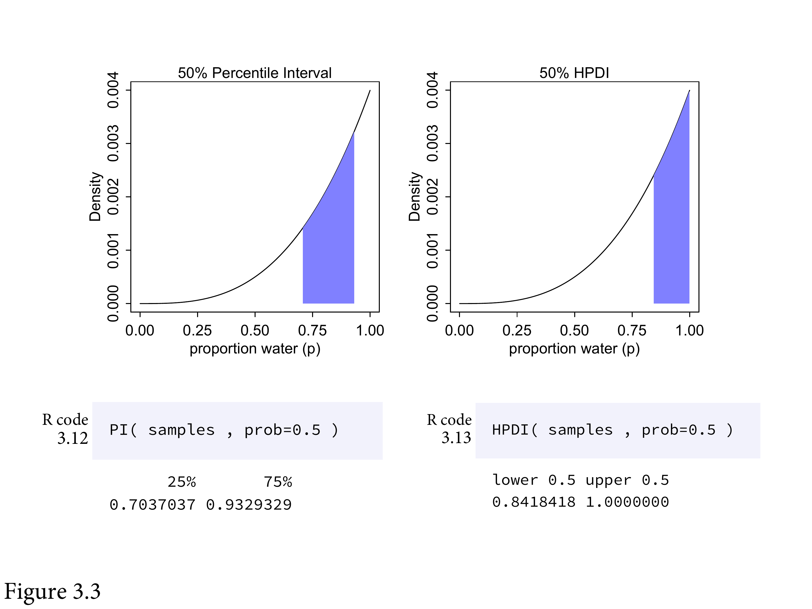
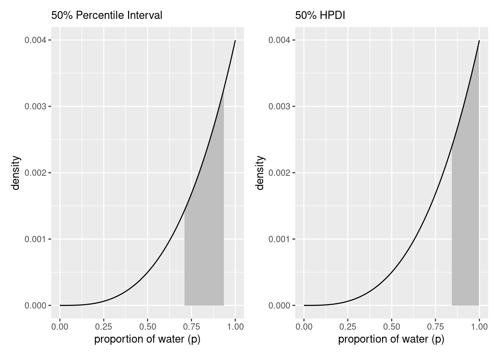
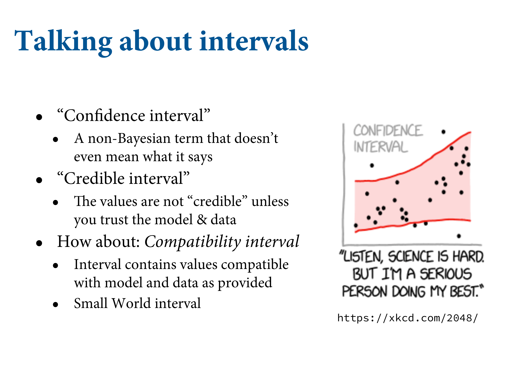

3.2 Sampling to summarize

What might you want to compute? Commonly people want to construct intervals.
3.2.1 Intervals of defined boudaries
What’s the posterior probability that the proportion of water is less than 0.5?
# add up posterior probability where p < 0.5
d %>%
filter(p_grid < .5) %>%
summarise(sum = sum(posterior))## # A tibble: 1 × 1
## sum
## <dbl>
## 1 0.172But since grid approximation isn’t practical in general, it won’t always be so easy. Once there is more than one parameter in the posterior distribution, even this simple sum is no longer very simple.
So let’s see how to perform it using samples from the posterior.
# Add up all the samples under .5, divided by the total number of samples
samples %>%
filter(p_grid < .5) %>%
summarise(sum = n() / n_samples)## # A tibble: 1 × 1
## sum
## <dbl>
## 1 0.163Do the same but using count():
samples %>%
count(p_grid < .5) %>%
mutate(probability = n / sum(n))## # A tibble: 2 × 3
## `p_grid < 0.5` n probability
## <lgl> <int> <dbl>
## 1 FALSE 8371 0.837
## 2 TRUE 1629 0.163Two general kinds of intervals. One is an interval of defined boundaries. Upper left is the probability that less than half the world is covered by water. Compute by counting the number of samples that satisfy the criteria, then dividing by the total number of samples. Upper right is the probability between 50% and 70%. Lower right - there’s an infinite number of 80% intervals.
Using the same approach, how much posterior probability lies between 0.5 and 0.75?
samples %>%
filter(p_grid > .5 & p_grid < .75) %>%
summarise(sum = n() / n_samples)## # A tibble: 1 × 1
## sum
## <dbl>
## 1 0.606This is shown in the upper right of Figure 3.2.
# upper left panel
p1 <-
d %>%
ggplot(aes(x = p_grid, y = posterior)) +
geom_line() +
geom_area(data = d %>% filter(p_grid < .5)) +
labs(x = "proportion of water (p)",
y = "density")
# upper right panel
p2 <-
d %>%
ggplot(aes(x = p_grid, y = posterior)) +
geom_line() +
# note this next line is the only difference in code from the last plot
geom_area(data = d %>% filter(p_grid < .75 & p_grid > .5)) +
labs(x = "proportion of water (p)",
y = "density")
library(patchwork)
p1 + p23.2.2 Intervals of defined mass
What a compatibility interval indicates is a range of parameter values compatible with the model and data.
Where does the 80th percentile lie? i.e. the boundaries fo the lower 80% posterior probability.
(q_80 <- quantile(samples$p_grid, prob = .8))## 80%
## 0.7627628This is shown in the bottom-left of Figure 3.2. Similarly, the middle 80% interval lies between the 10th percentile and the 90th percentile.
samples %>%
summarise(`10th percentile` = quantile(p_grid, p = .1),
`90th percentile` = quantile(p_grid, p = .9))## # A tibble: 1 × 2
## `10th percentile` `90th percentile`
## <dbl> <dbl>
## 1 0.451 0.815For quick indexing:
(q_10_and_90 <- quantile(samples$p_grid, prob = c(.1, .9)))## 10% 90%
## 0.4514515 0.8148148This is shown in the bottom-right of Figure 3.2.
# lower left panel
p1 <-
d %>%
ggplot(aes(x = p_grid, y = posterior)) +
geom_line() +
geom_area(data = d %>% filter(p_grid < q_80)) +
annotate(geom = "text",
x = .25, y = .0025,
label = "lower 80%") +
labs(x = "proportion of water (p)",
y = "density")
# lower right panel
p2 <-
d %>%
ggplot(aes(x = p_grid, y = posterior)) +
geom_line() +
geom_area(data = d %>% filter(p_grid > q_10_and_90[1] & p_grid < q_10_and_90[2])) +
annotate(geom = "text",
x = .25, y = .0025,
label = "middle 80%") +
labs(x = "proportion of water (p)",
y = "density")
p1 + p2
Intervals of this sort are very common in the scientific literature. We’ll call them Percentile Intervals (PI). These do a good job of communicating the shape of a distribution, as long as it’s not too asymmetrical.
But in terms of supporting inferences about which parameters are consistent with the data, they are not perfect.
Consider the posterior distribution consistent with observing three waters in three tosses, and a flat prior.
# here we update the `dbinom()` parameters
n_success <- 3
n_trials <- 3
# update `d`
d <-
d %>%
mutate(likelihood = dbinom(n_success, size = n_trials, prob = p_grid)) %>%
mutate(posterior = (likelihood * prior) / sum(likelihood * prior))
# make the next part reproducible
set.seed(3)
# here's our new samples tibble
(
samples <-
d %>%
slice_sample(n = n_samples, weight_by = posterior, replace = T)
)## # A tibble: 10,000 × 4
## p_grid prior likelihood posterior
## <dbl> <dbl> <dbl> <dbl>
## 1 0.717 1 0.368 0.00147
## 2 0.652 1 0.277 0.00111
## 3 0.548 1 0.164 0.000656
## 4 1 1 1 0.00400
## 5 0.991 1 0.973 0.00389
## 6 0.788 1 0.489 0.00195
## 7 0.940 1 0.830 0.00332
## 8 0.817 1 0.545 0.00218
## 9 0.955 1 0.871 0.00348
## 10 0.449 1 0.0908 0.000363
## # … with 9,990 more rowsThe rethinking::PI() function works like a nice shorthand for quantile().
quantile(samples$p_grid, prob = c(.25, .75))## 25% 75%
## 0.7087087 0.9349349rethinking::PI(samples$p_grid, prob = .5)## 25% 75%
## 0.7087087 0.9349349Two basic kinds of specified mass intervals. PI gives you the central area, where .25 is left over in each tail. They’re not necessarily the right thing to use. What if you have an asymmetric distribution? Now the 50 percentile interval omits the highest value. Use the HPDI to keep the highest point. But remember these are just summaries.

rethinking::PI(samples$p_grid, prob = .5)## 25% 75%
## 0.7087087 0.9349349In this example, it ends up excluding the most probable parameter values, near \(p\) = 1.
rethinking::HPDI(samples$p_grid, prob = 0.5)## |0.5 0.5|
## 0.8418418 0.9989990Here the HPDI has an advantage over the PI, but in most cases, the two are very similar. That’s because the posterior is skewed. When the posterior is bell-shaped, it hardly matters what type of interval you use.
Often, all compatibility intervals do is communicate the shape of a distribution.
tidybayes makes it easy to request multiple types of intervals:
tidybayes::median_qi(samples$p_grid, .width = c(.5, .8, .99))## y ymin ymax .width .point .interval
## 1 0.8428428 0.7087087 0.9349349 0.50 median qi
## 2 0.8428428 0.5705706 0.9749750 0.80 median qi
## 3 0.8428428 0.2562563 0.9989990 0.99 median qiIt also supports HPDIs:
tidybayes::mode_hdi(samples$p_grid, .width = .5)## y ymin ymax .width .point .interval
## 1 0.955384 0.8418418 0.998999 0.5 mode hdi# lower left panel
p1 <-
d %>%
ggplot(aes(x = p_grid, y = posterior)) +
# check out our sweet `qi()` indexing
geom_area(data = d %>% filter(p_grid > tidybayes::qi(samples$p_grid, .width = .5)[1] &
p_grid < tidybayes::qi(samples$p_grid, .width = .5)[2]),
fill = "grey75") +
geom_line() +
labs(subtitle = "50% Percentile Interval",
x = "proportion of water (p)",
y = "density")
# lower right panel
p2 <-
d %>%
ggplot(aes(x = p_grid, y = posterior)) +
geom_area(data = . %>% filter(p_grid > tidybayes::hdi(samples$p_grid, .width = .5)[1] &
p_grid < tidybayes::hdi(samples$p_grid, .width = .5)[2]),
fill = "grey75") +
geom_line() +
labs(subtitle = "50% HPDI",
x = "proportion of water (p)",
y = "density")
# combine!
p1 | p2
3.2.3 Point estimates

d %>%
arrange(desc(posterior)) %>%
slice(1)## # A tibble: 1 × 4
## p_grid prior likelihood posterior
## <dbl> <dbl> <dbl> <dbl>
## 1 1 1 1 0.00400samples %>%
summarise(mean = mean(p_grid),
median = median(p_grid))## # A tibble: 1 × 2
## mean median
## <dbl> <dbl>
## 1 0.803 0.843(
point_estimates <-
dplyr::bind_rows(samples %>% tidybayes::mean_qi(p_grid),
samples %>% tidybayes::median_qi(p_grid),
samples %>% tidybayes::mode_qi(p_grid)) %>%
dplyr::select(p_grid, .point) %>%
# these last two columns will help us annotate
dplyr::mutate(x = p_grid + c(-.03, .03, -.03),
y = c(.0005, .0012, .002))
)## # A tibble: 3 × 4
## p_grid .point x y
## <dbl> <chr> <dbl> <dbl>
## 1 0.803 mean 0.773 0.0005
## 2 0.843 median 0.873 0.0012
## 3 0.955 mode 0.925 0.002d %>%
ggplot(aes(x = p_grid)) +
geom_area(aes(y = posterior),
fill = "grey75") +
geom_vline(xintercept = point_estimates$p_grid) +
geom_text(data = point_estimates,
aes(x = x, y = y, label = .point),
angle = 90) +
labs(x = "proportion of water (p)",
y = "density") +
theme(panel.grid = element_blank())
We care about uncertainty, and we want to summarise that. To use a point estimate, you need to provide a cost-benefit analysis. e.g. conservation or forecasting.
One principles way to go beyond using the entire posterior as the estimate is to choose a Loss Function: a rule that tells you the cost assoicated with using any particular point estimate.
Tell me which value of \(p\), the proportion of water on the Earth, you think is correct, and if you get it exactly right, I will pay you $100. But I will subtract money from your gain, proportional to the distance of your decision from the correct value. Now that you have the posterior distribution in hand, how should you use it to maximise your expected winnings?
# The expected loss will be:
d %>%
summarise(`expected loss` = sum(posterior * abs(0.5 - p_grid)))## # A tibble: 1 × 1
## `expected loss`
## <dbl>
## 1 0.313We can repeat this for every possible decision:
make_loss <- function(our_d) {
d %>%
mutate(loss = posterior * abs(our_d - p_grid)) %>%
summarise(weighted_average_loss = sum(loss))
}
(
l <-
d %>%
dplyr::select(p_grid) %>%
dplyr::rename(decision = p_grid) %>%
dplyr::mutate(weighted_average_loss = purrr::map(decision, make_loss)) %>%
tidyr::unnest(weighted_average_loss)
)## # A tibble: 1,000 × 2
## decision weighted_average_loss
## <dbl> <dbl>
## 1 0 0.800
## 2 0.00100 0.799
## 3 0.00200 0.798
## 4 0.00300 0.797
## 5 0.00400 0.796
## 6 0.00501 0.795
## 7 0.00601 0.794
## 8 0.00701 0.793
## 9 0.00801 0.792
## 10 0.00901 0.791
## # … with 990 more rowsNow it’s easy to find the parameter value that minimises that loss:
# this will help us find the x and y coordinates for the minimum value
min_loss <-
l %>%
filter(weighted_average_loss == min(weighted_average_loss)) %>%
as.numeric()
# the plot
l %>%
ggplot(aes(x = decision, y = weighted_average_loss)) +
geom_area(fill = "grey75") +
geom_vline(xintercept = min_loss[1], color = "white", linetype = 3) +
geom_hline(yintercept = min_loss[2], color = "white", linetype = 3) +
ylab("expected proportional loss") +
theme(panel.grid = element_blank())
And this is actually the posterior median.
samples %>%
summarise(posterior_median = median(p_grid))## # A tibble: 1 × 1
## posterior_median
## <dbl>
## 1 0.843Usually it’s better to communicate as much as you can about the posterior distribution, as well as the data and the model itself.

You can’t have confidence in an interval. It’s doublespeak. Compatibility emphasises the uncertainty. Credibility is the next conversation.